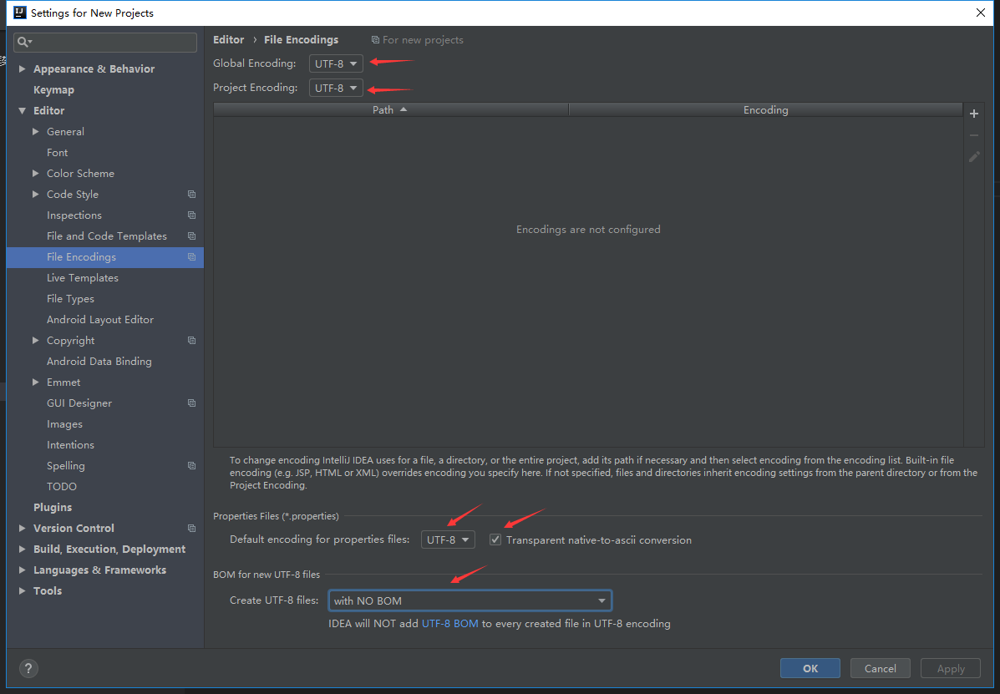

设置编码：Settings->Editor->File Encodings
第一步：在idea的安装目录下的bin文件夹中找到idea64.exe.vmoptions文件添加-Dfile.encoding=UTF-8

第二步：修改idea的配置如下：

设置自动编译：Settings->Build,Execution,Deployment->Compiler

修改字体、字体大小、字体行间距：Settings->Editor->Font
配置tab可以多行显示：Settings->Editor->General->Editor Tabs
配置代码提示不区分大小写：Settings->Editor->General->Code Completion
显示行号和方法间的分隔符：Settings->Editor->General->Appearance
自动导包：Settings->Editor->General->Auto Import
ctrl + 鼠标滚轮可以修改字体大小：Settings->Editor->General

修改注释的字体颜色：Settings->Editor->Color Scheme->Comments
鼠标停留显示方法说明：Settings->Editor->General
忽略不显示特定的文件和文件夹（如*.iml文件和.idea文件夹）：Settings->Editor->File Types->Ignore files and folders
配置maven：Settings->Build,Execution,Deployment->Build Tools->Maven
关闭自动保存功能
关闭自动保存：Settings->Appearance & Behavior->System Settings
未保存文件标上星号：Settings->Editor->General->Editor Tabs
取消重新打开idea会进入最近一次打开的项目：Settings->Appearance & Behavior->System Settings